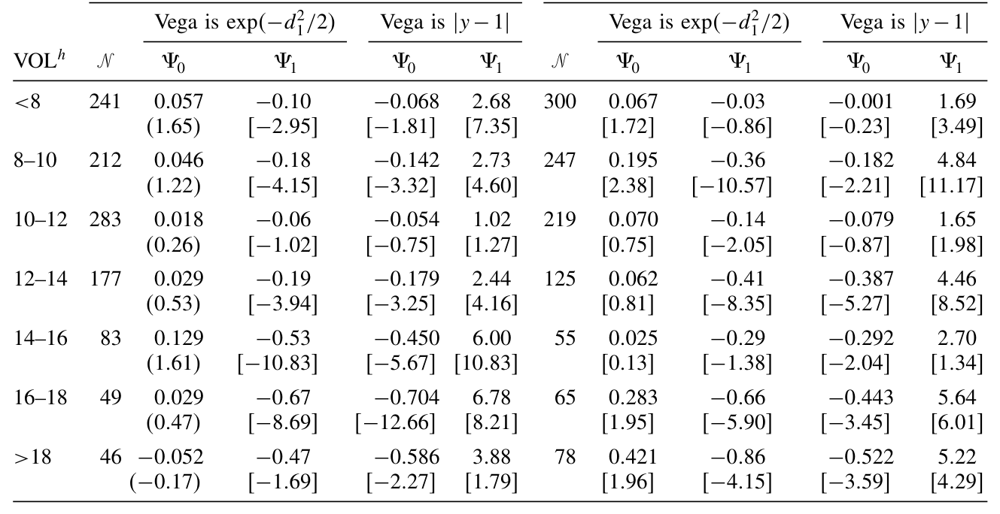
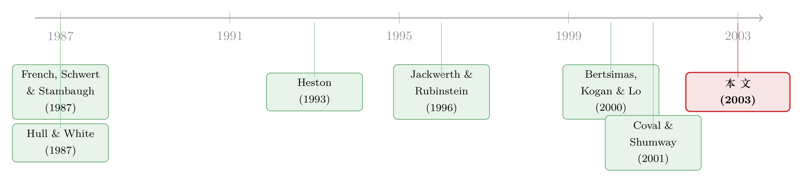

「买了保险，注定亏钱」：从一份对冲组合里，读出波动率的负价格
本文读的是 Bakshi & Kapadia (2003, Review of Financial Studies)：他们构造了一个「买入看涨期权、用股票对冲掉方向风险」的组合（delta-hedged portfolio），证明只要市场为波动率风险定了价，这个组合的平均损益符号就等于波动率风险溢价的符号；用 S&P 500 指数期权一测，组合系统性地亏钱——于是市场波动率风险溢价是负的。
1 一个看似无害的问题
先抛一个问题：波动率（volatility）有没有价格？
这话听起来像绕口令。我们都知道资产有价格，风险（比如市场风险）也有价格——这正是 CAPM 的全部内容。可「波动率本身」是个更隐蔽的东西。股票收益的波动率是随机的（stochastic volatility），这件事在金融经济学里早有公论。但波动率的「随机变动」这一层风险，到底有没有被市场补偿？如果有，补偿是正还是负？换句话说，当波动率突然飙升时，那是个让投资者更痛、还是更爽的状态？
这个问题不只是学术上的好奇。它关系到一个困扰了期权市场很多年的谜：为什么平价期权（at-the-money）的隐含波动率，会系统性地、持续地高于事后实现的波动率？[Jackwerth and Rubinstein (1996)] 把这个现象摆上了台面。一个自然的猜想是——期权「贵」了，因为买期权的人愿意为某种东西多付钱。多付的，可能正是一笔波动率风险的保费。
但猜想归猜想。难点在于：你要怎么把这笔保费量出来、还要定出它的符号？
2 难在哪里
要给波动率风险定价，传统路径是先写下一个完整的随机波动率模型——比如 [Heston (1993)] 或 [Hull and White (1987)]——把波动率过程的漂移、扩散、相关系数统统参数化，再用期权数据去估计，最后从估出来的「风险中性漂移」和「真实漂移」之差里，把波动率风险溢价（volatility risk premium）抠出来。
这条路能走，但代价不小。你得同时赌对两件事：定价核（pricing kernel）长什么样，和波动率过程长什么样。任何一处设定错了，估出来的溢价都不可信。更麻烦的是，波动率本身看不见、要靠模型反推，等于在沙地上盖楼。
于是一个自然的问题是：有没有办法绕开这一切？能不能不假设定价核、不参数化波动率过程，就直接把波动率风险溢价的符号读出来？
这正是 Bakshi 和 Kapadia 这篇论文最漂亮的一招。
3 核心那一招：把所有风险都对冲掉，只留波动率
他们的做法，说穿了非常朴素：构造一个 delta 对冲组合（delta-hedged portfolio）——买一份看涨期权，同时卖空一定数量的标的股票，使得这个组合对股价的瞬时方向风险为零；剩下的净现金，按无风险利率计息。
把这个组合的损益叫做「delta 对冲收益」（delta-hedged gains），记为 \(\Pi_{t,t+\tau}\)。它的定义是：
$$\Pi_{t,t+\tau} \equiv C_{t+\tau} - C_t - \int_t^{t+\tau}\Delta_u\,dS_u - \int_t^{t+\tau} r\,(C_u - \Delta_u S_u)\,du$$
这里 \(C_t\) 是看涨期权价格，\(\Delta_t \equiv \partial C_t/\partial S_t\) 是对冲比例，\(S_t\) 是标的股价，\(r\) 是无风险利率。
直觉是这样的：第一项 \(C_{t+\tau}-C_t\) 是期权本身的价值变化；第二项 \(\int \Delta_u\,dS_u\) 是你的股票空头头寸贡献的损益；第三项是净现金按无风险利率应得的利息。三者相减，就是「对冲掉了股价方向、又扣掉了无风险收益」之后，净剩下来的那点东西。
现在关键问题来了：这个 \(\Pi\) 的均值，应该是多少？
4 模型：三种世界，三种答案
4.1 世界一：波动率是常数
先看最简单的情形。假设股价服从几何布朗运动（geometric Brownian motion），漂移 \(\mu\)、波动率 \(\sigma\) 都是常数：
$$\frac{dS_t}{S_t} = \mu\,dt + \sigma\,dW_t^1$$
由伊藤引理（Itô's lemma），看涨期权价格可以写成
$$C_{t+\tau} = C_t + \int_t^{t+\tau}\Delta_u\,dS_u + \int_t^{t+\tau}\left(\frac{\partial C_u}{\partial u} + \frac{1}{2}\sigma^2 S_u^2\frac{\partial^2 C_u}{\partial S^2}\right)du$$
而 Black–Scholes 定价方程告诉我们
$$\frac{1}{2}\sigma^2 S^2\frac{\partial^2 C}{\partial S^2} + rS\frac{\partial C}{\partial S} + \frac{\partial C}{\partial t} - rC = 0$$
把这两式一拼，立刻得到 \(\Pi_{t,t+\tau}=0\)。在连续交易下，对冲组合的损益恒为零。 这其实是 Black–Scholes 的另一种说法：期权可以被股票和债券完美复制，复制组合不多赚也不少赚。论文进一步指出，这个「均值为零」的性质，对所有一维马尔可夫扩散过程都成立。
4.2 世界二：波动率随机，但风险不被定价
接着放松假设。让波动率自己也变成一个随机过程：
$$\frac{dS_t}{S_t} = \mu(S_t,\sigma_t)\,dt + \sigma_t\,dW_t^1$$ $$d\sigma_t = \theta(\sigma_t)\,dt + \xi(\sigma_t)\,dW_t^2$$
两个布朗运动 \(W^1, W^2\) 之间的相关系数为 \(\rho\)。这时期权价格是 \(S\) 和 \(\sigma\) 两个状态变量的函数，对应的定价方程也多了几项：
$$\frac{1}{2}\sigma_t^2 S_t^2\frac{\partial^2 C}{\partial S^2} + \frac{1}{2}\xi^2\frac{\partial^2 C}{\partial \sigma^2} + \rho\,\xi\,\sigma_t S_t\frac{\partial^2 C}{\partial S\,\partial\sigma} + rS_t\frac{\partial C}{\partial S} + \big(\theta - \lambda(\sigma_t)\big)\frac{\partial C}{\partial\sigma} + \frac{\partial C}{\partial t} - rC = 0$$
这里冒出来一个新角色 \(\lambda(\sigma_t)\)，它就是波动率风险的价格（price of volatility risk），定义为
$$\lambda(\sigma_t) \equiv -\frac{\text{cov}(dm_t,\,d\sigma_t)}{m_t}$$
其中 \(m_t\) 是定价核。这一项是整篇文章的命门：它衡量「波动率的变动」与「定价核的变动」之间的协方差。如果波动率上升恰好发生在投资者最需要钱（定价核高）的坏状态，那么 \(\lambda\) 就不为零。
但如果波动率风险根本不被定价呢？ 也就是 \(\lambda(\sigma_t)\equiv 0\)。论文证明，此时即便允许离散对冲，delta 对冲收益的均值依然是零（连续交易下精确为零；离散 \(N\) 次对冲下，偏差只有 \(O(1/N)\) 的量级——[Bertsimas, Kogan, and Lo (2000)] 早已说明，这个偏差对称且很小，\(N\approx 10\) 就足够把它压住）。
也就是说，只要波动率风险没价格，无论波动率本身怎么随机地上蹿下跳，对冲组合平均下来都不赚不赔。
4.3 世界三：波动率风险被定价——反转出现
真正关键的一步在这里。如果 \(\lambda \neq 0\)，把定价方程代回期权价格的伊藤展开，经过一番整理（论文的命题 1），delta 对冲收益变成：
$$\Pi_{t,t+\tau} = \int_t^{t+\tau}\lambda(\sigma_u)\frac{\partial C_u}{\partial\sigma_u}\,du + \int_t^{t+\tau}\xi(\sigma_u)\frac{\partial C_u}{\partial\sigma_u}\,dW_u^2$$
第二项是一个伊藤积分，由布朗运动驱动，它的期望是零（鞅性质）。于是取期望之后，只剩下第一项：
这个式子简洁得近乎残忍。它说：delta 对冲收益的期望，等于「波动率风险的价格」乘以「期权的 vega」，再对时间积分。
而 vega（\(\partial C/\partial\sigma\)，期权价格对波动率的敏感度）我们知道是严格为正的——波动率越大，期权越值钱。于是符号被锁死了：
$$\text{sign}\big(E_t[\Pi_{t,t+\tau}]\big) = \text{sign}\big(\lambda\big)$$
对冲组合是赚是赔，符号就等于波动率风险价格的符号。 你不需要知道定价核，不需要估波动率过程，甚至不需要知道 \(\lambda\) 的大小——只要看一眼对冲组合长期是赚还是亏，就能读出波动率风险溢价的正负。
这就是把一个原本要靠结构模型硬估的量，化成了一道几乎只需「数零」的实证题。
5 为什么符号「应该」是负的
模型之外，还有一段经济学直觉值得讲透。
考虑一个持有市场组合、相对风险厌恶系数为 \(\gamma\) 的 Lucas–Rubinstein 代表性投资者，其定价核 \(m_t = S_t^{-\gamma}\)。对它用一次伊藤引理，可以得到
$$\lambda(\sigma_t) = \gamma\,\text{cov}\!\left(\frac{dS_t}{S_t},\,d\sigma_t\right)$$
现在回想一个老掉牙的实证事实：波动率往往在市场下跌时飙升（[French, Schwert, and Stambaugh (1987)]、[Glosten, Jagannathan, and Runkle (1993)]）。这意味着股票收益与波动率负相关，于是 \(\lambda < 0\)。
经济含义于是浮出水面：买期权，本质上是在给市场暴跌买保险——因为暴跌往往伴随波动率上升，而期权（vega 为正）在那时会变贵、替你兜底。既然是保险，投资者就愿意为它多付钱；多付的代价，就体现为持有这份「保险」的人长期亏损。delta 对冲组合的系统性亏钱，与负的波动率风险溢价，是同一枚硬币的两面。
6 数据与检验
模型给出了两个可检验的预言：
- 时间序列上：平价期权的 delta 对冲收益，应当与波动率风险溢价相关——波动率越高，亏损越大。
- 横截面上（沿行权价方向）：delta 对冲收益的绝对值由 vega 决定，而 vega 在平价处最大、向两端递减。所以最亏的应该是平价期权，越是远离平价（deep in/out of the money）越接近零。
论文用 S&P 500 指数期权来检验。主要发现：
- delta 中性、正 vega 的策略（买看涨、用股票对冲）显著跑输零。在所有行权价与到期日的组合上平均，策略损失约为市场指数的
0.05%；对平价看涨期权，损失约0.13%。这个量级在经济上不小——对平价期权而言，0.13%相当于期权价值的 8%。 - 横截面回归表明，控制了波动率和到期日之后，delta 对冲收益与 vega 负相关，亏损在平价处最大，与预言完全吻合。把对冲期限拉长，亏损更深。结果对时间、对加入看跌期权都稳健。
- 波动率越高的时候，亏损越深。这条损失贯穿整个样本期，无法用「市场波动率长期下行」来搪塞。

Table 4: supports the central implication that the volatility risk premium is
那么，会不会是跳跃风险（jump risk）而非波动率风险在作祟？毕竟「怕暴跌」也可以表现为对跳跃的恐惧。论文从三个角度排查：用风险中性分布的偏度、峰度（跳跃恐惧的代理）去解释对冲损失，发现风险中性偏度只能解释短期期权的一部分损失，而波动率风险溢价在所有到期日上都是主导因素；在「崩盘前」子样本里，对冲组合对看涨、看跌依然平均亏损；尾部事件之后买入的期权，正负收益之间也没有显著差别。结论是：跳跃恐惧虽然合理，却不能单独解释这些系统性损失。
这篇论文与后来一条「特质波动率—期权收益」的研究血脉相承——同样是用 delta 对冲收益当探针。关于这一点，可参见《波动越「自己的」，期权越不值钱——一条藏在 delta 对冲收益里的暗线》。
7 文献脉络
把这条线索捋一捋。
最早的源头，是两类看似无关的实证事实：一是「波动率随机」的共识，以及 [French, Schwert, and Stambaugh (1987)]、[Glosten, Jagannathan, and Runkle (1993)] 发现的「跌时波动率升」这一杠杆/反馈效应；二是 [Hull and White (1987)]、[Heston (1993)] 在理论上把随机波动率写进期权定价，引入了「波动率风险的价格」这个概念，但符号和大小始终悬而未决。
接着，[Jackwerth and Rubinstein (1996)] 把「隐含波动率系统性高于实现波动率」这个谜摆上桌面，给「期权贵在哪」提供了一个亟待解释的实证锚点。
然后，[Bertsimas, Kogan, and Lo (2000)] 在方法上备好了弹药——他们刻画了离散对冲下复制误差的渐近分布，证明它对称且均值为零，这恰好成了本文「\(\lambda=0\) 时对冲收益均值为零」的基石。

真正关键的一步，是本文（2003）把这些碎片拼成了一个无需参数化的检验：用 delta 对冲收益的符号直接识别 \(\lambda\) 的符号。几乎与此同时，[Coval and Shumway (2001)] 从期权收益、[Buraschi and Jackwerth (2001)] 从「期权是不是冗余证券」的角度，给出了波动率风险溢价非零的旁证——本文与它们互为印证，但路径独立、识别更干净。这条线之后又汇入 [Pan (2002)] 等对跳跃与波动率联合定价的研究，最终长成今天 VIX 衍生品、方差互换（variance swap）定价的庞大文献。
8 评论与延伸（Q&A + 研究方向）
(a) 几个可能的疑问
Q：delta 对冲收益和直接算「期权收益」有什么区别？
直接持有期权的收益里，混着标的方向风险（delta）、时间价值、波动率风险好几样东西，符号被搅成一团。delta 对冲把方向风险减掉、再扣掉无风险收益，于是命题 1 保证：剩下的均值只反映波动率风险溢价（和被单独排查的跳跃）。这是它比裸期权收益更干净的地方。
Q：识别可信吗？会不会只是离散对冲带来的偏差？
这正是论文最在意的反驳。命题 1 第 2 部分证明：即使离散对冲，\(\lambda=0\) 时均值偏差只有 \(O(1/N)\)；[Bertsimas, Kogan, and Lo (2000)] 的模拟也显示 \(N\approx10\) 就够。而实证里观察到的损失（平价期权占期权价值的 8%）远大于这个偏差量级，所以不太可能是离散化的产物。
Q：vega 真的恒为正吗？万一不是，符号论证就垮了。
对标准期权，vega 严格为正是教科书结论；论文还专门用数据估计了 vega 并验证其为正，把这块地基夯实了。需要提醒的是，深度实值/虚值期权的 vega 趋近于零，对识别波动率风险溢价几乎没有信息量——这也是为什么检验聚焦在平价附近。
Q：负的波动率风险溢价，和「负的方差风险溢价」是一回事吗？
高度相关但不完全等同。本文识别的是连续波动率过程那一层的风险价格 \(\lambda\)，符号为负；后续 variance swap 文献度量的方差风险溢价，往往把跳跃成分也卷了进来。本文的贡献恰恰在于把波动率风险与跳跃恐惧分开，证明前者是主导。
Q：这对「隐含波动率为何高于实现波动率」之谜给了什么答案？
给了一个内部自洽的解释：负的 \(\lambda\) 抬高了波动率过程的风险中性漂移，从而抬高期权价格、抬高隐含波动率。换句话说，那个长期为正的「隐含—实现」缺口，正是投资者为下行保险付的保费的镜像。
Q：为什么用指数期权，而不是个股期权？
因为「跌时波动率升」这个负相关，在市场层面最强、最稳定，对应的市场波动率风险溢价也最干净。个股的特质波动率风险溢价是另一个故事（且符号可能相反），需要单独处理。
(b) 几个可能的研究问题与提案
1. 信用市场里的「波动率保险」溢价
【经济故事】公司债利差里含着一份对资产波动率的空头敞口——资产波动率上升，违约期权变贵，债主受损。能否照搬 delta 对冲的思路，构造一个「买公司债、用股票/CDS 对冲掉方向与违约风险」的组合，从其系统性损益里读出信用市场的波动率风险溢价符号？ 【可行性】中。需要 TRACE 的公司债成交、对应股票与 CDS 数据；识别上的难点是公司债的离散交易和流动性噪声会污染「对冲收益」，需要更稳健的对冲比例估计。doable，但比指数期权脏得多。
2. 外资持有人与波动率风险溢价的横截面
【经济故事】不同投资者群体对「下行保险」的需求强度不同。若某些市场/个股的外资持有比例更高，而外资更厌恶尾部与波动，那么这些标的的期权 delta 对冲损失（即更负的 \(\lambda\)）应当更深。 【可行性】中。需要个股期权数据 + 外资持股（如各国 FactSet/EPFR 或本地登记数据）。识别可用「可投资度」放开作为外生冲击；难点是个股期权流动性与 vega 估计的噪声。
3. 流动性枯竭时刻的 \(\lambda\) 动态
【经济故事】本文发现「波动率越高、亏损越深」。一个自然延伸是：在流动性危机（如 2008、2020 三月）中，做市商的对冲能力本身受限，波动率风险的价格会不会跳变？把 \(\lambda\) 的时变与中介资产负债表约束挂钩，是一条诱人的暗线。 【可行性】高。指数期权数据齐全，事件窗口清晰，可与中介杠杆因子（如一级交易商杠杆）做时序回归。识别相对干净，doable。
9 我的判断
这篇论文的贡献，在于一种「少假设、强识别」的优雅。它没有去拟合任何一个随机波动率模型，却用一个对冲组合的损益符号，干净利落地把波动率风险溢价的正负钉死了。命题 1 那个 \(E[\Pi]=E[\int\lambda\cdot\text{vega}\,du]\) 的等式，是那种「一旦看懂就觉得本该如此」的结果——而真正难的，是想到去构造这个组合。它把一个结构计量的难题，翻译成了一道几乎只靠符号就能裁决的实证题，这是方法论上的漂亮之处。
对识别的担忧，我有两点。其一，离散对冲偏差虽被论证为 \(O(1/N)\)，但实际数据里对冲频率、交易成本、bid-ask 价差都会侵蚀「对冲收益」的测量，8% 这个量级里有多少是真溢价、多少是摩擦，值得用更细的日内数据再核一遍。其二，跳跃与波动率的纠缠虽被三种方法排查，但用风险中性偏度当跳跃代理终究是间接的；在更现代的框架里（同时估计跳跃强度与波动率），这条结论是否依然稳健，是我想看到的后续。
接下来最想看的，是把这套「对冲收益符号识别」搬到信用与外资两个场景：公司债的波动率保险溢价、以及不同持有人结构下 \(\lambda\) 的横截面差异。如果那里也能读出一个稳定的负号，这篇论文的思想就不只属于指数期权，而属于一切「带着隐含期权的资产」。
参考文献
- Bakshi, G., and N. Kapadia (2003). Delta-Hedged Gains and the Negative Market Volatility Risk Premium. Review of Financial Studies 16(2), 527–566.
- Bertsimas, D., L. Kogan, and A. Lo (2000). When is Time Continuous? Journal of Financial Economics 55, 173–204.
- Buraschi, A., and J. Jackwerth (2001). The Price of a Smile: Hedging and Spanning in Option Markets. Review of Financial Studies 14, 495–527.
- Coval, J., and T. Shumway (2001). Expected Option Returns. Journal of Finance 56, 983–1009.
- French, K., W. Schwert, and R. Stambaugh (1987). Expected Stock Returns and Volatility. Journal of Financial Economics 19, 3–29.
- Glosten, L., R. Jagannathan, and D. Runkle (1993). On the Relation Between the Expected Value and the Volatility of the Nominal Excess Returns on Stocks. Journal of Finance 48, 1779–1801.
- Heston, S. (1993). A Closed-Form Solution for Options with Stochastic Volatility with Applications to Bond and Currency Options. Review of Financial Studies 6, 327–343.
- Hull, J., and A. White (1987). The Pricing of Options with Stochastic Volatilities. Journal of Finance 42, 281–300.
- Jackwerth, J., and M. Rubinstein (1996). Recovering Probability Distributions from Option Prices. Journal of Finance 51, 1611–1631.
- Pan, J. (2002). The Jump-Risk Premia Implicit in Options: Evidence from an Integrated Time-Series Study. Journal of Financial Economics 63, 3–50.